收录于合集
弥赛亚主义苏联政治传播中的东正教因子及其转化
来源 ：《现代传播》2016年第2期，第:44-54页，发表时有删节。
作者 ：潘祥辉
华东师范大学传播学院副教授，文学博士，历史学博士后，主要从事政治传播学与媒介考古学研究。
[内容摘要]
：东正教是俄罗斯的千年国教，在俄国形成了一种深厚悠久的文化传统。尽管苏联建国后奉行无神论，但苏联政治中仍处处可见东正教传统的影响。东正教传统中的“弥赛亚主义”给苏联政治打上了深刻的烙印，也给苏联的政治传播以深刻影响。东正教传统中的救世思想、圣像与圣徒崇拜、宗教忏悔仪式等均为苏联的政治传播所内化和吸收。苏联的政治传播与其说是一种和旧制度的决裂，不如说是一种沿袭，其核心是一种对俄罗斯千年国教传统中的“弥赛亚主义”的改造和转化。
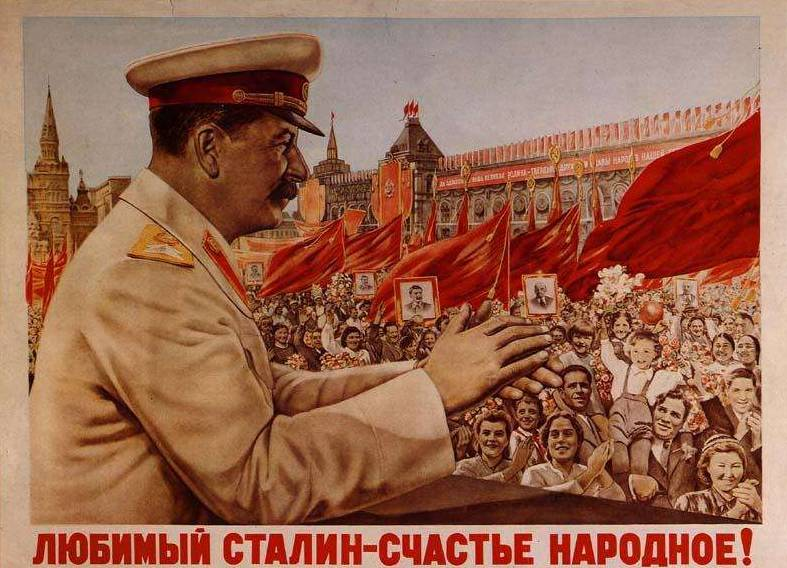
1 引言
从公元988年基辅大公弗拉基米尔接受拜占庭帝国的基督教作为国教算起，东正教影响了俄罗斯一千多年，奠定并形成了俄罗斯一千余年的思想根基。东正教信仰使俄罗斯的思想和文化带上了浓厚的神学色彩。在比较政治学者阿尔蒙德看来，俄罗斯的政治文化与东正教会有着紧密的联系。“独裁统治，绝对主义、家产制以及东正教传统”是俄罗斯的四大历史遗产，而东正教传统显得独一无二，“在俄罗斯，正如拥有支配性宗教传统的其他国家一样，东正教会将自己与国家紧紧地结合在一起，视自身为国教会。传统上，它规劝自己的皈依者用世俗的方式显示对国家的忠诚和顺服，作为回报，国家将其确立为国教。这一遗产仍然见诸后共产主义时代的统治者身上，他们努力把自己与俄罗斯的教会遗产联系在一起；也见诸众多俄罗斯人身上，他们拥有一种内在的冲动，将认同他们的国家视为一种更高的精神使命。” 宗教传统对政治文化的影响十分强大。
俄罗斯东正教的传统也影响到了苏联的政治传播。政治传播作为“关于政治的有目的的传播”， 无疑受到文化传统的影响。正如美国文化传播研究学者琼·奥克·尤姆所指出的：“传播是一个基本社会过程，因而它受所属社会的哲学基础和价值体系的影响。” 在施拉姆看来，苏联政治传播的显著特征就是无处不在的宣传以及强烈的意识形态色彩。媒体被国家垄断，作为党的喉舌和工具为维持和巩固苏维埃政权而服务。所有媒介和传播管道都必须按照官方的意识形态来宣传和动员、组织和教育群众，任何异端的思想受到严厉的管制，这种传播模式也被称为“全能主义体制”。这种体制不仅影响了苏联，也影响了许多以苏联为范本的社会主义国家。那么，苏联的这种政治传播模式又从何而来呢？是借鉴自外国，还是发端于本土？这方面的探讨和研究无疑十分薄弱。一些代表性的著作，不论是施拉姆等人对“苏联共产主义传媒体制”的研究，还是Peter Kenezt（1985）对苏联大众动员的研究，Matthew Lenoe（2004）对苏联报纸和斯大林文化的研究 ，以及我国台湾学者余敏玲等对苏联宣传及其国际影响的研究等 ，都没有回答这个问题。
在笔者看来，苏联的政治传播难免有借鉴自国外的元素，如对1789年法国大革命遗产的继承，[8]但源自其本土的传统因素，尤其是宗教因素更不容忽视。由于苏联革命曾激进地反对传统和宗教，研究者因此容易忽视苏联政治传播与传统接续的一面。应该看到，1917年十月革命胜利后，苏联对东正教确实进行了强力地清洗，但这并不意味着宗教传统的消失。因为任何文化传统都具有强大的路径依赖性，东正教传统在俄罗斯和苏联更是如此。那么，东正教传统又是如何影响苏联政治传播的呢？我们可以从延续千年的俄罗斯的“弥赛亚主义”入手分析。
2 “弥赛亚主义”与俄罗斯的千年传统
在笔者看来，苏联政治及政治传播中的本土传统，就是东正教中强烈的“弥赛亚主义”。俄罗斯作家卡拉- 穆尔扎说，俄罗斯人就是一群自觉自愿地背起十字架的人，他们只要一背起十字架，幸福感便由然而生。俄罗斯人心中，隐藏着对全人类巨大的宗教关怀，俄罗斯人觉得，他们生来就被上帝选定，并有义务将天意传达于民。这就是他们的弥赛亚精神。俄罗斯思想家别尔嘉耶夫说：“无论莫斯科是第三罗马还是莫斯科是第三国际，都与俄罗斯的弥赛亚思想联系在一起。”
“弥赛亚”一词源自古犹太教思想，希伯来名词Messiah的意思是“受膏者”，在旧约《以赛亚书》和《但以理书》等多部先知书中，弥赛亚就是先知所预言的解救万民的救世主。弥赛亚思想为后出的基督教所继承，在基督教中有“拯救”、“救世”、“上帝选定”、“庄严使命”、“普济天下”等意义。公元395年，罗马帝国一分为二，基督教随着罗马帝国的分裂分化为以拉丁语地区为中心的西派即天主教，和以希腊语地区为中心的东派，即东正教。天主教以罗马教廷为中心，东正教以拜占庭帝国的君士坦丁堡为中心。
和天主教相比，东正教较少强调教会的权威和组织结构、圣礼、祭司的守身，以及宗教的其他世俗性的方面，而是更加强调神学问题。东正教神学倾向于强调单一本质，接受基督的神性而忽视它的人性。东西方基督教的另一个差异表现在教会与世俗权力的关系上。天主教权力集中于教宗身上，教权至上，教会的权力可以和世俗权力相抗衡，甚至一度超过世俗君主。而东正教则从来没有这样的独立性，其最高权力则属于东罗马帝国的皇帝，宗教从属于世俗君主，东罗马皇帝既是世俗权力的最高拥有者，又是教会首脑，君士坦丁堡大教长及重要的主教都由皇帝来任命。
尽管天主教和东正教有很多不同之处，但他们都由基督教分化而来，对于《圣经》的基本内容，如“上帝信仰”、“末日审判”、“赎罪”以及“弥赛亚主义”等则没有分歧。公元988年，拜占庭皇帝将安娜公主嫁给基辅罗斯的弗拉基米尔大公，弗拉基米尔大公则接受了东正教教义，命令罗斯人接受洗礼。基辅市民在第聂伯河畔接受希腊牧师的洗礼时，弗拉基米尔大公下令，将罗斯人原先崇拜的多神教偶像抛进河中，这就是俄国历史上著名的“罗斯受洗”。从此东正教成了俄国罗斯的国教，并深深地嵌入了俄罗斯的思想和文化传统之中。1453年5月29日，奥斯曼帝国占领君士坦丁堡，东罗马帝国宣告灭亡。俄罗斯接过了拜占庭帝国的大旗，以“第三罗马帝国”自居，继续延续着东正教的传统，历千年之久。
俄罗斯的东正教可以划分为三种流派：一是与“慈爱”结合在一起的传统的僧侣－禁欲主义；二是在生物界发现神的能量并致力于改变世界的宇宙中心说以及与此有关的索菲亚学；三是致力于在自然界和社会中人的积极性的人类中心、历史诡辩和末日论。这三种流派虽然有所不同，但都隐含着共同的俄罗斯的东正教信仰。“这种信仰造就了这样一种俄罗斯人：他不满意这个世界，他内心谦和，他不喜欢这个世界强盛，他向往另一个世界，向往末日，向往天国。俄罗斯的民族精神主要不是被宣传和说教所培养，而是被圣餐式和深入到精神结构最深处的基督教徒慈悲的传统所培养。俄罗斯人认为，俄罗斯完全是一个特殊的国家，它具有特殊的使命。” 这种“特殊性”就是东正教中的“弥赛亚主义”。别尔嘉耶夫指出：俄罗斯王国就是一个凝聚和形成在弥赛亚思想象征之下的王国，寻找真理的王国，“俄罗斯王国的属性是由真正的东正教信仰所决定的……正如在古代犹太人意识中所发生的那样，宗教的因素和民族的因素相互促进、成熟。弥赛亚意识，就像它是为犹太教所特有的那样，它也是俄罗斯东正教所特有的。”
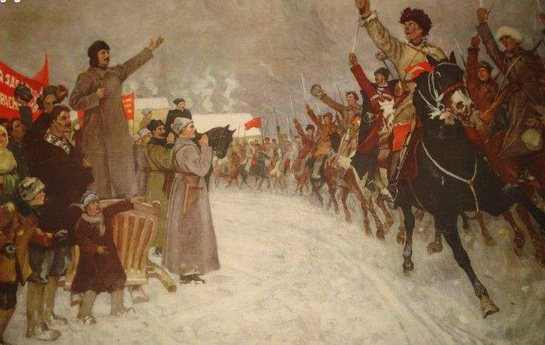
东正教与世俗政权合二为一的拜占庭传统也为俄罗斯所继承和沿续。东正教的宗教思想渗透于强有力的国家形式之中。教会成为专制制度的附属工具，主宰着人们的精神世界。教会使皇权得以神化，承认沙皇是通过主教公会实施权力的最高教会统治者，而主教公会则处于沙皇任命的总监的领导和监管之下。帝国皇帝被称为“通过上帝主持的登基涂油仪式的君主”，是俄罗斯“最高权威的牧师”。在这种政教合一的传统影响下，专制思想一度成为俄罗斯正教会的政治象征。尼古拉一世时期，国民教育大臣谢·乌瓦罗夫提出著名的三位一体公式即：东正教、专制制度、人民性合一的精神。这一公式对东正教及其教会的政治职能作了非常好的描述：东正教是专制制度的精神支柱，其使命就是为沙皇的极权统治提供意识形态基础。 “莫斯科正教帝国”就是这样一个将政权和神权合一的极权主义帝国，正如俄国著名的君主专制理论家伊凡雷帝所宣称的：“沙皇不仅应该管理国家，而且，还应该拯救灵魂。”
东正教的宗教思想及其与政权的合一形成了俄罗斯独特的政治文化，历千年之久而根深蒂固。苏联十月革命以马克思主义的无神论、唯物论思想激烈地反对教会和沙皇统治，但这种政治文化却不是那么容易改变的。事实上，俄罗斯思想传统中的“弥赛亚主义”不仅见诸于十月革命前，也见诸于十月革命后。不仅表现在普通民众身上，也表现在那些激烈地“反传统”的马克思主义者身上。
3 苏联政治革命中的弥赛亚主义
在法国学者德布雷看来，俄国共产主义正如人们所说的只是犹太救世主降临说的一种替代品，它保持了一种“运动”的状态因而发生了某种变形。其谱系要追溯到卡尔西顿主教大会。共产主义“这种世俗的教权主义既从圣保罗那里继承了野心和方法，也在圣约翰那里获得了原始精神。”
别尔嘉耶夫也曾深入探讨苏联革命与传统的关系。在他看来，受俄国特殊的宗教文化的影响，马克思主义在俄国被“俄罗斯化”了，变成了一种“无产阶级的弥赛亚”。“与无产阶级的弥赛亚联系在一起的马克主义的弥赛亚思想与俄罗斯的弥赛亚思想结合起来并混为一体。在俄罗斯的共产主义革命中，占统治地位的不是经验的无产阶级，而是无产阶级思想，是关于无产阶级的神话。共产主义革命是现实的革命，是万能的弥赛亚说，它希望给全世界带来幸福并解除压迫。”可见苏联人的马克思主义和东正教并非完全对立，在“救世”这一点上，就和俄罗斯的传统发生了巨大的共鸣，很容易为俄罗斯知识分子及民众所接受。
社会主义思想在俄罗斯经历了乌托邦社会主义、民粹主义的社会主义和科学社会主义（马克思主义社会主义）三个阶段，在别尔嘉耶夫看来，它非常符合俄国的社会心理，因为马克思主义被当作了一种“弥赛亚”。“马克思创建的无产阶级弥赛亚（救世说）是信仰的对象。马克思主义不只是科学和政治，他同样还是信仰。它的力量便基于此。”
19世纪那些深受宗教思想影响的俄国知识分子希望马克思主义能够拯救俄罗斯及其罪恶的灵魂，并建立一个人人平等的，没有剥削压迫的“天国”，这正是俄国知识分子身上体现的浓厚的“弥赛亚主义”。路标派知识分子布尔加科夫在《英雄主义与自我牺牲精神》中写道：“作为英雄的知识分子并不满足于普通劳动者的角色，它的幻想是成为全人类的拯救者，至少是俄国人民的拯救者。”这一点在秉承民粹主义功利主义倾向的俄国马克思主义者身上表现得十分突出。从自认为是俄国“第一个社会主义者和共产主义者”的车尔尼雪夫斯基开始，拯救人类就成了马克思主义平民思想家的强烈使命。他们自诩全知全能的上帝，知道真理之所在，民众幸福之所在，无所畏惧地为此目标而奋斗。“在他们的使命中，为实现自己的理想，哪怕毁灭世界也在所不惜。他们喜欢扮演民众的导师、未来俄罗斯的缔造者。” 这种激进主义在十九世纪俄国早期马克思主义者身上体现得尤其明显。如别林斯基、车尔尼雪夫斯基、尤其是车尔尼雪夫斯基《怎么办》中的“新人”拉赫美托夫，还有为达到“革命”目的而不择手段的涅察也夫等人，在他们的身上都存在这种救世和献身精神，它“混合了以普罗米修斯和弥赛亚自命的精英意识”。
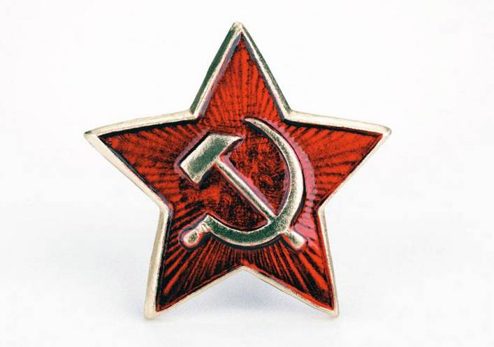
英国思想家伯林也看到了这一点，在1957年写作的《苏俄文化》一文中，伯林指出：“19世纪和20世纪初几乎所有的俄国知识分子内心都秉持着这样一种信念：所有的问题都是相互关联的，而且存在着某种原则上能够解决所有问题的理论体系。甚至认为，发现这种体系是一切道德、社会生活和教育的根本出发点和落脚点，而放弃这种探索则是不道德的行为”，因此在俄国的各个阶层，“几乎试图对各种宏观问题进行解释的哲学体系都会受到思想者们的热烈欢迎。马克思主义最后能够被俄国人所接受，就在于它提供这样一种体系。” 当1870年代和1880年代马克思主义传入俄国时，它找到了它几乎最理想的生长土壤，它与俄罗斯东正教信仰中的救世论思想如此契合，以致马克思主义在俄国人那里被看成就是一种“弥赛亚式”的救世方案。前苏联科学院国际经济与政治研究所所长亚历山大·雅科夫列夫说：“在我们的实践中，马克思主义不是别的，正是听从绝对权力的利益和任性的新的宗教，绝对权力数十次推崇自己的上帝，预言家和使徒，后来又对其进行诋毁。”
苏联建国后先后通过了《俄罗斯各族人民宣言》、《关于教会同国家分离和学校同教会分离》等一系列法令，驱逐了神职人员，没收了教会和修道院的土地，废除了教会的一切特权。但这种打压并没有完全与俄罗斯的传统割裂，而不过是作了转化。苏联打倒了东正教及其教主沙皇，但却又树立起了新的上帝，这个上帝就是布尔什维克政党及其领袖。布尔什维克宣称，它创造了一个全新的国家，找到了带领人民通往光明道路的唯一真理。这些使命表现在苏联宏大的经济计划和政治蓝图中。在苏联，布尔什维克就像上帝一样，它是为拯救人民而存在的，不仅拯救肉体，而且拯救灵魂。
在《俄罗斯共产主义与革命》一文中，别尔嘉耶夫详尽比较了苏维埃共产主义与传统莫斯科正教帝国的共同性：“俄罗斯共产主义接受了庞大国家的生活，笼罩着极端的国家主义形式，这令人遗憾地与俄罗斯国家旧传统一般无二。旧俄罗斯君主独裁在人民的宗教信仰里具有一贯根源。它意识到自己并自命为神权政权，新的俄罗斯共产主义国家也是独裁的，并且同样拥有人民信仰的根源，拥有工农群众新的信仰。它同样意识到自己并自认为是神圣帝国。旧俄罗斯君主制以正统的世界观为基础，要求与之保持一致。新俄罗斯共产主义政权也建立在正统世界观基础上，同样强烈要求正统性，永远摒弃异端邪说。集权性、对信仰完整划一的要求，作为帝国的基础，与人民的深刻的宗教社会本性相适应。苏维埃共产主义在自己的精神结构方面与莫斯科正教帝国极为相似，也是沉闷无比。”
苏联社会主义政治中的弥赛亚主义也表现在其对外政策中。不可否认，苏联的社会主义具有一定的“世界主义”的色彩，它以“解放全人类”自居，这和其继承的“弥赛亚精神”有直接关系。苏联社会主义的弥赛亚情结不仅使布尔什维克自命为“苏联人民”的拯救者，也使其自命为世界人民的拯救者。苏联因而致力于“输出革命”，并以“救世主”自居，这样一来不可避免地会干涉他国政治。苏联曾经在世界社会主义大家庭中就表现出强烈的“大国沙文主义”倾向。这种“社会主义的帝国主义”同样可以看作是苏联社会主义政治中的弥赛亚主义的一种因袭和转化。显然，苏联的社会主义政治中既有和传统的断裂，更有继承，两者的关系是一种“否定之否定”关系。源自东正教传统的苏联政治体制中的弥赛亚主义也表现在其政治传播中。
4 苏联政治传播对东正教传统的沿袭和转化
政治传播也可以理解为一种“对可能直接或间接产生政治影响的信息的构建、传送、接收和处理”过程， 在这个过程中，政治宣传、教化及对政治合法性的塑造无疑是核心。秉承马克思主义对宣传的重视，苏联社会主义的宣传和鼓动无处不在。苏联十月革命的胜利很大程度上有赖于其成功的宣传。这种宣传很好地利用了俄罗斯的传统宗教及文化心理。“为了征服一切，布尔什维克利用了一切。它利用了自由民主政权的软弱无力。为巩固被激发起来的群众，利用了它的象征物……它利用了俄罗斯心灵的特点，那种全部都被资产阶级社会世俗化的矛盾心灵，利用了它的宗教性，它的教条主义和激进主义，它对社会真理和人间上帝之国的，它的牺牲精神和承受痛苦的忍耐。它利用了俄罗斯人永远保留着的弥赛亚精神，俄罗斯对特殊道路的信仰……它宣传统一完整、作为统治教义的世界的必要性，以适应俄罗斯人民的信仰和管理生活的象征的习惯和要求。”
我们的确可以发现苏联政治传播模式与俄罗斯东正教传统存在一种有机的关联：俄罗斯东正教的布道模式、对圣物圣像的崇拜、对异端思想的管制以及为培养宗教虔诚进行的各种仪式都为苏联的政治传播所吸收、利用和转化。
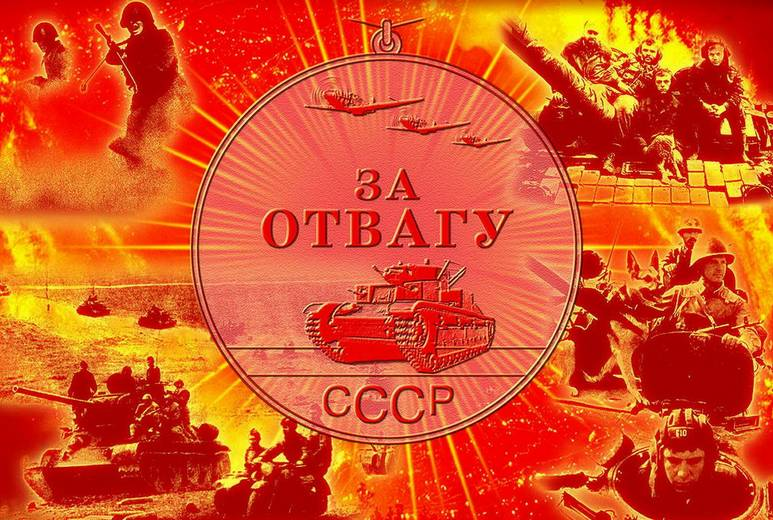
（一）政治宣传思想上对宗教布道的借鉴
苏联所信奉的社会主义政治思想，和基督教思想有许多共通之处，与圣奥古斯汀的《上帝之城》和空想社会主义者莫尔的《乌托邦》以及康帕内拉的《太阳城》中所表达的思想十分相似。历史学家汤因比明确指出，西方社会文化浸满基督教的成分，发端于西方社会的共产主义意识形态“具有犹太教- 基督教渊源” 。可见“共产主义”的救世理论和基督教中的弥赛亚主义确有可类比之处。陈力丹指出，早期的社会主义者与早期的基督教很相似，同样的痛苦，同样找不到出路，一些人把社会主义思想当作福音书进行宣传。“马克思主义诞生以前以及以后的几十年里，不少社会主义，特别是德国、法国的社会主义呈各种新宗教的形态。从社会主义发展的角度，马克思和恩格斯认为这是社会主义思想诞生和传播初期一种不可避免的现象。但到19世纪中叶，社会主义的宣传才逐渐脱离宗教宣传的模式而独了立发展。” 然而，社会主义的宣传模式当中始终有宗教布道的影子。
在媒介学者德布雷看来，社会主义诞生于印刷时代，印刷媒介、小册子、报纸等宣传媒介以及知识分子借助各种媒介进行的动员在社会主义运动中居功至伟。“活字印刷、知识分子和教师是社会主义环境的三个支柱”，而最重要的支柱是印刷。正是“社会主义的印刷信仰”，帮助“整个欧洲把圣经上的救世主降临转向历史唯物主义”，在这个过程中，“社会主义的负责人就像一个神父”，给人民传递革命的声音。 社会主义的这种宣传的确和基督教的“撒播”有相同之处。圣经中三篇《对观福音书》体现了耶稣的撒播思想。耶稣在海边对众多各色人群布道，他用了广泛地不停播种来比喻布道，“凡是有耳朵听我讲话的人，让他们听见吧！”共产主义面向大众的无处不在的宣传类似这种“撒播”。为了撒播革命，列宁就十分强调宣传和动员的功能。在《社会民主党在民主革命中两个策略》（1905年）中列宁指出：“我们党的一切组织和团体每天经常进行的全部工作，即宣传、鼓动和组织工作，都是为了加强和扩大同群众的联系。这种工作任何时候都是必要的，但是在革命时期会显得更加必要。”他甚至将自己定义为“宣传员”，他说：“我们这些人都是理论家，不过我更倾向于把自己看作是社会民主的宣传员。”
革命导师马克思与恩格斯也非常注意宗教布道者们的传播艺术，他们还经常讨论看到的宗教宣传方式的优劣。恩格斯曾引证《新约》中使徒保罗到雅典传教的做法，并加以引申。此外恩格斯还详细考察了基督教之所以能够广泛传播并成为世界性宗教的原因，他认为原因之一在于“它传教对象的平民化”。他认为基督教的宗教传播“在穷人、苦难人、奴隶和被排斥的人中寻找信徒，蔑视有钱人，有势力的人和有特权的人”，这种宗教鼓动性可能给了恩格斯的革命宣传以启发和借鉴，共产主义宣传也是从发动最底层的群众开始的。恩格斯研究基督教传播显然对它进行了一种“革命化”的解读，并将之应用于共产主义的宣传实践。
马克斯恩格斯有关共产主义的宣传理论和实践也为俄国早期的社会主义者所继承，并作了本土化的改造。1875年，恩格斯与俄国民主主义者、《前进》杂志主编彼.拉甫罗夫谈到宣传方式时说：“我们当中的每一个人都或多或少地受着我们所置身的精神环境的影响。对于俄国，对于依靠‘感情上的联系’，依靠道义感的宣传性刊物，您的方法可能是最好的。” 可见俄国社会主义者在政治宣传上有意识地注意借用俄国传统的文化资源。这种资源就是东正教传统。俄国布尔什维克本身也是把马列主义当作一种宗教真理来进行推广的。俄共布机关刊物叫《真理报》，这一名称也旨在告诉人们他们宣传的是“上帝的声音”，而布尔什维克就是先知和弥赛亚。正如施拉姆所说：“克里姆林尔宫里的领袖们究竟是怎样的一群人？他们是不稳定的，而且是狂热的。他们是普罗米修斯式的人物。的确，或许历史上从来没有这么少的人能够掌握如此大的权力，控制如此多的人，有如此宏大的信心认为他们精确地知道如何领导他们的臣民走向金色的牧场。”
苏联的共产主义宣称自己是唯一真理的掌握者，这和东正教宣称自己是唯一的“真谛”十分类似。别尔嘉耶夫指出：尽管共产主义者宣传无神论，进行反宗教的宣传，但苏联“共产主义不是作为社会体系，狂热地敌视所有的宗教（尤其是基督教）”，而是“它本身想接替基督教，它以回答人类心灵的实际问题自居，并赋予生命以意义。共产主义是一个完整的体系，它笼罩了整个生活。”我们可以发现，苏联共产主义确实一定程度上取代了东正教，并继承了其布道思想和手段。
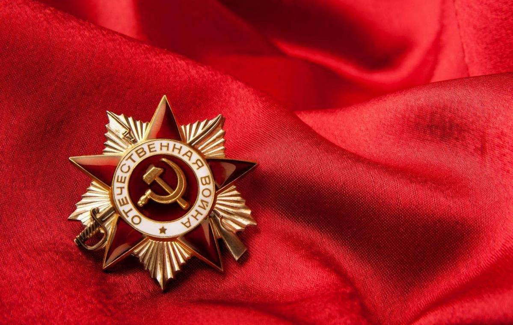
（二）对东正教传统中宗教象征物的政治改造和利用
1 ．对圣像崇拜的政治转化
宗教观念的内化和传播离不开象征物。在基督教传统中，图像是传递“神道”的重要媒介，具有教育和启示功能。从早期教会的墓穴画，至中世纪的教堂建筑中的壁画及马赛克、玻璃窗图像以及丰富多彩的拜占庭艺术，都无声地向信徒及人们传递有关神道的知识与内容。古罗斯从拜占庭接受东正教的同时，就同时接受了上帝是美的源泉的观念。教堂、圣像、宗教器具和服装等，都被看作是以艺术形式体现宗教精神内容的象征物。这一传统直接源自拜占庭。 俄罗斯东正教艺术中最为突出的就是圣像造型艺术。“圣像是一种特殊的教会传统，只不过它不是口头的和文字的，而是以色彩和形象体现的。”圣像以画像的方式表达神灵、圣者或神迹，是天主教和东正教的传统艺术品。俄罗斯有各种各样的圣像造型艺术：包括木板画或画布的圣像画、马赛克和壁画的圣像画、作为手抄和印刷书籍装帧的圣像画。圣像是俄罗斯东正教传统不可分割的一部分。东正教教堂用圣像来做室内装饰，图像居于重要的位置。它们象征着基督和圣徒的存在，诸圣的相通和共融。圣坛中央挂有圣像，四周则挂圣徒画像。在祭台前的圣门两旁，一般都挂上圣母抱婴和基督全能者的图像，分别标志着救恩的开始和救恩的完成。圣像作为一种视觉象征，它们本身带有奇迹的属性，是一种崇拜物。在东正教中，基督、圣母和圣徒的姿势永远正面而立，直视观众，从而能够促使他们把偶像当作真人对待。
对东正教徒来说，图像是一件“圣事”。信徒能透过图像能体验圣者的临在。他们认为尊敬图像就是人透过这有形的图像，去尊崇无形的上帝，并参与祂的救赎工作。同时，上帝也通过图像来接触尊崇者，并赐予他们恩泽。圣像崇拜在俄罗斯东正教中广泛存在，农村也不例外。在东正教徒的家中也总是把圣像放在显著的位置。东正教徒在外旅行的时候，通常要带上一个可折叠的小圣像。按照俄罗斯传统习俗，人在出生、死亡、结婚和某种重大事件中，都应当有圣像相伴。
这种宗教传统在苏联成立后继续存在。不过领袖像取代了圣像，列宁和斯大林的图像取代了基督和圣徒的画像，走进了工厂农村，千家万户。就如东正教的圣徒崇拜是通过圣像崇拜树立起来一样，苏联社会主义的革命崇拜与领袖崇拜也是通过“画像”来建构和传播的。斯大林本人就有这样的圣像崇拜的情结。斯大林小时候曾在一所东正教神学院受教育，这种圣像崇拜的情结体现在其对列宁画像的态度上。在孔策沃别墅的办公室兼卧室内，斯大林悬挂了一幅列宁的画像，上面还安着一只小灯泡。“这种做法并不是偶然的，它说明斯大林把它当作了圣像。”斯大林自己也希望被人民崇拜。从二十年代末、三十年代初，随着其权力的稳固，苏联兴起了对斯大林的个人崇拜，一个重要标志就是“圣像崇拜”。苏联国家机关的办公室到处挂起了斯大林的像，节日的游行队伍里人们开始高举他的画像。在各种集会上，宣读给斯大林的致敬信和发表各种祝词逐渐成为惯例。尽管在这些场合也可看到其他领导人的画像和听到对他们表示敬意的言辞，但是斯大林的画像占有一个十分突出的位置。 苏联的政治宣传画也从圣像画的创作中汲取艺术营养，“红光亮”的艺术风格使领袖像散发出神圣的魅力，如同弥赛亚一样。1930年代的罗曼·罗兰在其《莫斯科日记》中就指出，斯大林的这种做法“可能在社会上挑起向一个人顶礼膜拜的不祥的宗教信仰”。这种通过领袖像树立个人崇拜的做法正是斯大林所需要的，它也被推广到了其他社会主义国家。前民主德国总理汉斯·莫德罗在他回顾苏东巨变的著作中谈到了苏联这种政治传播方式对民主德国的影响。他说：“在沙皇俄国举行宗教仪式时，人们在大街上高举着宗教圣像，而在十月革命后，政治家的画像取而代之。这在德国工人运动中是不可思议的事情。在德国1920年代以前的照片和摄影图片中，看不到这样一张照片。自从德国共产党成为由莫斯科控制的共产国际中的一员，在‘布尔什维克化’之后，德国共产党也受到感染。领袖的画像，不管他活着还是死了，都像圣像画一样被到处张贴。”
苏联的政治宣传画服务于政治宣传，它只能美化而不能丑化领袖，因此对于画像的创作、管理和审查都十分严格，事实上，对于政治领袖的画像有一些统一的原则和美学标准，艺术家不能违背。这种对画像的审查和标准化管理可以从东正教圣像画的创作中找到原型。正因为圣像重要，俄罗斯东正教对圣像的创作有严格的要求和统一的标准。1620年前后，沙皇宫廷内建立了圣像画衙门，它具有自己的圣像画署。1707年，沙皇彼德一世设立了新的“神像画署”管理圣像画的审查，并任命都主教斯特凡负责对圣像进行宗教监督，任命来自乌克兰的画家扎鲁德内任“神像画署”署长监管圣像画家。圣像画家被要求应当按照可靠的古代原作来作画，应当有生活美德、不酗酒，不亵渎。 苏联的政治宣传画同样对艺术家的创作有要求，也有文化部门的审查和规定。
在苏联，领袖肖像深入每一个工厂、会议室、每一个家庭，甚至农户，它企图取代之前圣像在老百姓心中的位置，应该说宣传效果还是十分显著的。前苏联科学院国际经济与政治研究所所长亚历山大·雅科夫列夫回忆他小时候说，自己母亲是个虔诚的教徒，进入“新社会”开始崇拜“新神”，她对苏联领袖和对上帝及沙皇的态度是一样的尊敬，她不容许子女骂苏联领袖，不尊“皇上”，她还将苏联领袖的画像挂在墙上。可见苏联政治领袖像比起东正教的圣像来，其“神圣”的程度有过之而无不及。
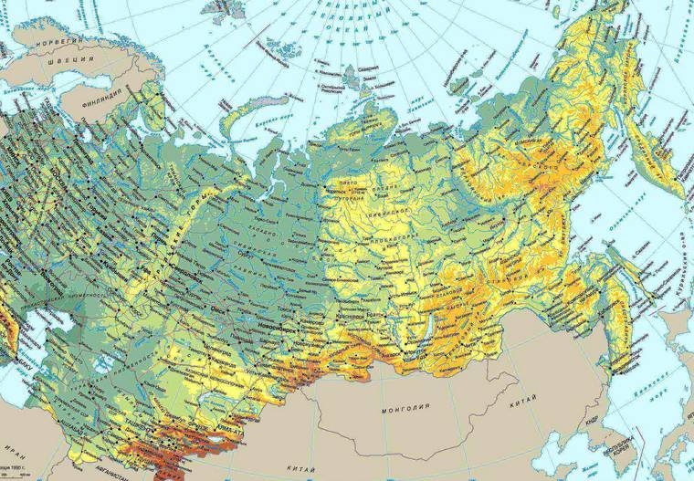
2 ．对颜色符号、圣徒崇拜等宗教象征的吸纳和转化
颜色是一种重要的政治象征物。就如美国新文化史研究学者林·亨特所言，颜色、装饰品、衣服、餐具、钱币、历法和纸牌等都可以成为政治象征物，“这些象征物不是简单地表达政治立场，而是人们认识其政治立场的工具。”在法国大革命期间，这些政治象征物建构了政治斗争的战场。红色曾经是1789年法国大革命和1871年巴黎公社革命中的重要的象征物。十月革命后的布尔什维克更是将“红色”定为“国色”，这固然有对法国大革命和巴黎公社的沿袭，但更是对东正教传统中“红色”象征意义的借鉴和挪用。
在俄语中“红色”的意思是“美丽”，红色是一种充满光明的颜色。苏联著名的红场其本义就是“美丽的广场”，它由17世纪中期的沙皇命名。在东正教中，红色代表圣灵，象征血与火。对于东正教徒们来说，红色寓意着基督受难时的鲜血，它象征着主洗礼子民的圣灵之火，耶稣基督用它给自己的选民施洗。红色与东正教有着不解之缘，它也是俄罗斯北方和诺夫哥罗德圣像画最普遍的颜色。诺夫哥罗德圣像画家们创造的著名红底圣像画，如15-16世纪初的《圣以利亚告知》、《圣母像显灵》、《圣乔治斗恶龙的神迹》等作品，深入人心。这些圣像画家说，透过圣像画的红色背景才可能领略真正的俄罗斯永恒之美。红色底色圣像画具有很强的表现力。红色底色也令人联想到天上之国的永恒之美。 这些红底色的圣像画我们也可以在苏联宣传画中看到其身影。
十月革命后，苏联布尔什维克借用俄国文化中红色颜色的含义，将之改造为革命颜色，既宣示他们事业的社会主义性质，同时也用红色鼓动民众起义，发扬勇敢和牺牲精神。因为红色在俄国和欧洲文化中包含了“英勇”、“忘我”、“革命”、“牺牲”以及“暴力”“血腥”等含义。红色覆盖了苏联的国旗、党旗、红领巾、宣传画等一切象征物。在苏联的国家机器以及出版物命名中也是红色遍地。如苏联的军队叫红军、苏联的政府机关报叫《红报》（1918—1939），历史学杂志叫《红档》（1922—1941），大众报刊中更有《红色处女地》（1922—1942）、《红色田野》（1923—1931）、《红色年鉴》（1922—1937）、《红色青年》（1921—1925）、《红色记者》（1920）等等。显然，将红色的寓意从“ 基督的鲜血 ”改造成“烈士的鲜血”，再改造成革命的象征物，是一种对传统的延续。这一点突出表现在对“红领巾”符号的继承和转化上。红领巾源自俄罗斯的东正教，红色象征着基督的血。当时小孩子每个星期天上“主日课”时都会戴着红领巾当作一个识别标志。在1917年后，俄共（布）为加强孩子的共产主义教育，设立了少先队，那时候俄罗斯社会以红领巾当作一种光荣，俄共（布）就全盘接收，以红领巾作为少先队的一种标志，并赋予新的含义——红旗的一角。苏联将俄国传统中的红色占为己有，既增加了苏维埃革命和政权的合法性，也有利于拉近民众和新政权的心理距离，从政治传播的角度而言，这种转化手段显然十分高明。
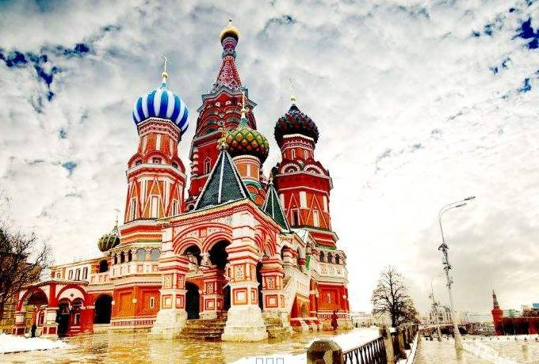
东正教中的“圣人崇拜”也被苏联的政治宣传所改造和挪用。在基督教历史中，圣人崇拜产生于2世纪时的殉教者祭礼。人们庆祝那些为信仰而死在天国降生并在他们的坟墓上举行圣餐仪式。后来，这种崇拜很快从殉教者和使徒扩展到地方教会的创始主教、传播福音的修道士，被祝圣的处女和寡妇、伟大的神秘主义者，苦行者和思想家等。早期基督教圣徒崇拜，在罗马帝国西部主要表现为圣物崇拜，而在东部则表现为圣像崇拜。在中世纪，圣徒们发挥着各色各样的社会功能，他们既被看做其所在教区的庇护者，又被视为基督教信仰的英雄以及世人生活的道德楷模，发挥了重要的教育作用。
“ 封圣 ”则成为教会的一项权力，用以表彰那些殉教者或使徒。东正教也实行对圣人的封圣，使信徒们坚信他们能够放心大胆地向这些“上帝的朋友”祈祷。在很长一段时间里，由地方主教进行封圣。从16世纪开始，主要是由东正教各教派的国家公共会议来决定封圣。1574年至1721年的俄国，自彼德大帝创设“神圣主教会议”之日起，俄国教会以这种方式新封了150位圣人。 这些圣人成为东正教信众崇拜的偶像，发挥了宣传示范的重要功能。
苏联成立后，圣徒崇拜与封圣仪式以新的方式出现，这就是“大树典型、大立偶像”。国家通过各种形式的封号、奖励、表彰推出“新人”，树立新时代的英雄榜样，以供百姓学习、效仿。苏联在不同时期塑造了不同的偶像，他们的共同特点则是建造新世界的工具，是国家机器中的一个螺丝钉，是集体中的一员。
除了媒体上铺天盖地的典型宣传，给“圣徒们”树立纪念碑也是重要的“封圣”手段。在十月革命胜利后不久的1918年4月15日，人民委员会（苏维埃工农政府）主席列宁、人民委员卢那察尔斯基和斯大林就共同签署了《 人民委员会关于拆除为沙皇及其奴仆建立的纪念碑和拟定俄国社会主义革命纪念碑计划的法令 》，要求以“新的、能反映出革命的劳动俄国的思想与感情”纪念符号代替原来的标志等。[54] 列宁所倡导这种纪念性宣传，是对东正教“封圣”与“圣人崇拜”的一种沿袭和创新。与列宁制定的计划相适应，十月革命后不久数十座杰出思想家和革命家的纪念碑就落成了，如莫斯科的马克思和恩格斯纪念碑、罗伯斯庇尔纪念碑、马拉纪念碑、丹东纪念碑、苏维埃宪法方尖碑、彼德格勒的马克思纪念碑、拉萨尔纪念碑、海涅纪念碑等等。
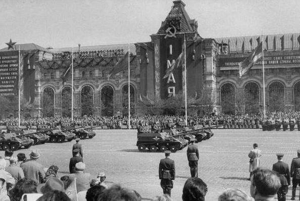
而苏联最高领袖的雕塑和纪念碑就更多了。如同俄国末代沙皇尼古拉二世自己受封为“东正教圣人”一样，列宁、斯大林也被封为苏联社会主义的“至高领袖”。这从其众多的纪念碑雕塑中可以看出来。自从1924和1929年列宁和斯大林的首座塑像树立，两位革命领袖各种造型的塑像就在苏联及社会主义阵营国家如雨后春笋般冒出来，遍布广场、花园、码头、车站、机关、院校，塑像的高度、式样、材质各异，数量之多无法统计。据俄罗斯一个在全球拥有大批成员的列宁像民间统计小组“RU－LENIN”的数据：目前全球4500多个行政单位中有约有6000座列宁塑像，其中3843座在俄罗斯，1252座在乌克兰，白俄罗斯有235座，哈萨克斯坦有138座，外高加索和除哈萨克斯坦外的中亚地区有161座，波罗的海三国有144座，摩尔多瓦有52座，全球其他国家共有169座。相比之下，斯大林塑像要少得多，但斯大林像作为列宁塑像中“忠实学生”的陪伴物一度遍及苏联各地。根据俄方资料，全球现存的、有一定曝光率的斯大林像约为140座，其中约80座位于俄罗斯。
为了使圣人“不朽”，更加有利于偶像崇拜，革命领袖不仅广立雕塑，其死后的遗体还被保存并供奉起来，成为广大群众“永远崇敬”的“圣体”。在基督教文化中，尸体是崇拜的对象之一。在雷吉斯·德布雷看来，尸体本身是一种古老的宗教媒介，最早把死者遗体引入神圣空间的是天主教文化。“从地下墓穴到大教堂，到中世纪的礼拜堂－－圣骨堂，我们看到尸骨‘走出’地下，以骨粒的方式，通过一系列套装的盒子，升到荣耀的高处。” 这种遗骸崇拜也被政治文化所转化和利用。在中世纪的法国，国王的遗体必须要展示40天以示尊崇。基督教的这一传统在俄国的东正教中也广泛存在。“遗体崇拜”是俄国东正教突出的宗教文化。在东正教里，“遵守教规者”或圣徒的尸体、遗骨常常因有神迹而不腐烂。尸体不腐烂是东正教封圣的原则之一，圣徒不腐的干尸在东正教传统中意味着神性的获得。布尔加科夫指出：“干尸崇拜在教义上是以对圣灵与圣徒尸体的特殊联系为依据的，这种联系没有被死亡所破坏。”圣徒通过自己的干尸保持着特殊的神性，因此也会得到特别的推崇。按照东正教会的说法，干尸是圣徒的遗骨，作为崇拜之物具有神力、创造奇迹的能力，具有庇护作用。干尸经常以内部或半公开的形式在教堂里长期保存和展览，供人膜拜。由于遗体崇拜的传统在俄国由来已久。革命领袖的遗体供人膜拜出现在苏联也就变得容易理解了。1924年1月21日列宁去逝后，卢那察尔斯基提出永久保留列宁遗体的建议，这个建议很快被斯大林采纳。在苏共政治局委员中，斯大林执意保存列宁遗体，这一做法也受到没有受到民间的抵制。相反，有多达1.2万封的电报和信件飞向克里姆林宫，要求政府永远保存列宁遗体。1924年1月25日，即在列宁逝世的第四天，《莫斯科工人》周报刊登了3封来信，总标题为《列宁遗体应当保存！》。这3封信都包含了一个请求，即要将列宁遗体存放在水晶棺内，以便能随时目睹伟大领袖的遗容。这种传统的做法被苏联所采用。
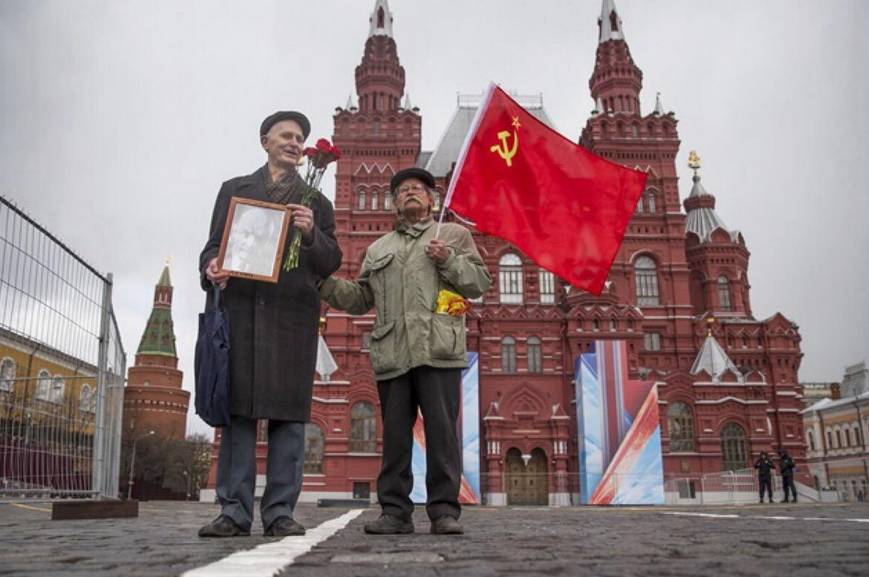
( 三)对宗教仪式的改造和利用
苏联的政治传播不仅对东正教的宗教象征物有所挪用和借鉴，对东正教的许多宗教仪式更是进行了创造性转化。在俄国这样一个宗教传统浓厚的国家，宗教仪式在人们的生活中占有重要的地位，苏联的政治宣传无法清除宗教的因素，而改造宗教仪式则是最好的选择。正如别尔嘉耶夫所指出的：“如果真能够清除掉俄国人精神当中的宗教仪式，那么就不可能实现共产主义，因为没有人再会去献身，没有人去做高于个人目的的服务。”实际上，宗教仪式有助于强化和塑造信众的观念和信仰，这一点也以为苏联的政治传播所吸收和利用。
东正教与天主教一样有七大圣礼：受洗、涂圣油、受圣职、告解、婚配、终傅、圣体血。各种宗教仪式渗入教徒们的日常生活，俄罗斯人的生老病死、婚丧嫁娶都离不开宗教仪式。在东正教神学家看来，宗教仪式是教会对教徒思想发生影响和作用的重要手段。透过“宗教仪式”，教会能够保持和信徒的联系，并对他们施以影响。
东正教的一些宗教仪式被苏联政治传播所改造和转化。一个明显的例子是东正教圣礼中的“告解”仪式。它又称为“忏悔”，当信徒犯错时，可以透过此行动得到赎罪。东正教会规定：七岁儿童以上，需要先忏悔告解后，才可以领圣餐。“忏悔”不独东正教，天主教和基督新教也有这样的仪式，它源自基督教的“原罪说”和“救赎说”。根据圣奥古斯丁的《忏悔录》，忏悔即向神的“告白”。在他看来，人类祖先亚当违背神的命令，偷吃禁果犯了罪，本性从此败坏，既然人性本恶，奥古斯丁就特别强调个人的内心的“善恶”斗争以及良心的作用。他认为，只有“我和我自己斗争”的内心风暴，才能把自己赤裸裸地暴露在上帝面前，通过忏悔和反省，接受良心的谴责，惩罚自己的罪恶；只有“我与我的决斗”，才能克制使人堕落的肉体欲望，挣脱束缚意志的情欲铁链，净化灵魂的自我，做到安贫、温良、哀痛、饥渴慕义、慈惠待人、纯洁、和平。奥古斯丁的思想后来被托马斯·阿奎那所继承，成为基督教道德的理论基石。
忏悔作为一项制度大概始于凯尔特修道院，教士或隐士向他的灵友忏悔开其制度化先河。在西欧的中世纪，教区制度建立后，教会对每个人的思想感情的控制达到了前所未有的高度，最有效的训诫制度之一就是“忏悔”。到12世纪，任何违背教义的罪孽都必须私下向牧师进袒露，不忏悔就可能会受到惩罚，甚至被逐出教会。1215年，拉特兰公会议颁布教皇敕令规定，每位教徒必须每年一次向教区牧师忏悔。“在一千多年的时间里，这是强化头脑和心灵基督教化的最重要的步骤之一。心灵的控制起初是教士对教士的控制，后来成为在俗教士对教徒的控制。”
通过忏悔和自我斗争可以实现“赎罪”和“净化”的思想和做法也为俄罗斯的东正教所继承。在俄罗斯知识分子身上能看到这种对“道德主义”和“道德纯洁”的偏好。《路标》文集的作者认为知识分子“应当重新审视自己的世界观”。他们谴责知识分子“缺乏宗教感”，呼吁知识分子“自身自责和忏悔”，他们认为，只有通过这一方式，知识分子方能获得“新的意识”。 对于左翼知识分子而言，他们虽然不信宗教，却也相信“自责和忏悔”是提高思想境界的重要途径。苏联建立后，将这种“宗教忏悔”仪式改造成“自我批评”，转化为党员自我净化，以及党组织对知识分子和群众的“思想纯洁”和“观念改造”的有效途径。显然，共产主义社会中的自我批评首创自苏联，早在1928-1929年间斯大林为了统一思想就在党内发起过自我批评运动。 这种“自我批评”不但包括口头上的“自我解剖”，“向党交心”也包括写日记、写检讨、写悔过书等方式，这些方式全部被吸收转化为苏联的政治文化，成为党员教育和思想改造的有利武器。 这些做法从一开始其实很容易为俄国人所理解和接受，因为它本来就是从俄罗斯的传统中“长”出来的。
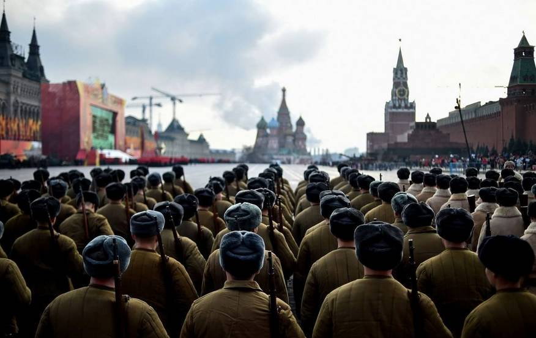
而另外一个苏联人“发明”的思想和政治教育的方法就是“结合劳动的思想改造”，这同样来自对东正教传统的“创造性转化”。为了使信徒领悟和坚定信仰，基督教有倡导“修道”的传统。最初修道的形式是独修，独修者会到旷野修道，他们就被称为“隐士”。圣安东尼(251—356年)被视为第一位修士，帕科缪修士则开创团修的形式。他建立了有管理有规律的团体生活方式，让修士们一同进行日课、劳动和祷告。这种修道制度的目的就是帮助修士远离世俗生活，防止可能会变成懒散、怪异的危险。基督教的修道制度将祈祷、劳作和惩戒结合在了一起。修士们的全部生活就是祷告、劳作和日课。通过劳作结合日课进行圣修在中世纪十分盛行。有“西方修道主义族长”之称的圣本笃，建立了圣本笃准则，对基督教的修道运动进行改革。圣本笃也倡导通过劳动来进行圣修。《圣本笃守则》第48章：“懒惰是灵魂的大敌。所以修士们应在某些时刻进行手工劳动，而在其他一些固定的时间阅读圣经….如果由于地方的需要或清贫要求修士们自己从事收割，他们不应当为此而感到悲苦。因为真正的修士，应以他们的手的劳动来生活，就像我们的教父和使徒所做的那样。”东正教同样主张通过日课和劳动进行修道。早在14-15世纪，在俄罗斯就建造了168个修道院，其中有一些位于白海附近。东正教的这一类“修道院”就是后来俄共(布)党校)的雏形和来源。而基督教的日课制度在苏联变成了繁文缛节的政治学习，基督教通过 “劳动”和“苦修”来悟道的做法则变成了后来苏联的劳改制度。 和基督徒的自愿苦修不同，苏联的“苦修”是强制性的，目的也在于改造思想。不过不是将他们改造成基督徒，而是要将其改造为苏式的“共产主义新人”。
在历史学者程映虹看来，布尔什维克在俄国的掌权是历史上第一次由国家政权推行的、持续时间长久的“新人”工程，这个工程的结果是在1930年代成形的“苏维埃人”。他指出：布尔什维克塑造新人的哲学基础是人的可塑性和可完美性，它与基督教对人性的认识和改造人性的努力存在着相似性。 在斯大林当政时期，这种劳动改造通过流放和苦役的方式进行。在蛮荒之地“改造”那些思想不正的“异端分子”，苏联对外宣传称之为“阶级敌人的再教育基地”。斯大林时期古拉格遍地。在美国学者安妮·阿普尔鲍姆看来，这种对知识分子及政治异议者的监禁与流放沿袭了俄罗斯古已有之的传统，许多沙皇时代的改造与惩罚方式后来都应用于苏联的古拉格劳改体系中。足见苏联的政治新人改造工程既源出于宗教传统，但又有所转化。
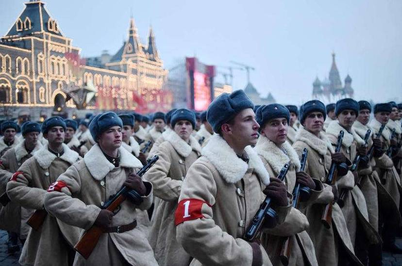
5 结语
考察政治传播离不开对政治文化的分析，宗教与文化传统是影响政治文化和政治传播的重要因素。在制度经济学家汪丁丁看来，“我们没有办法摆脱我们各自的已经‘消解’的传统，传统是不可能被消解的，它只可以转化。”
事实上，任何新的发明总是在旧的传统的基础上发展起来的。尤其是在制度与文化的创新方面，新的发明总是在模仿旧的传统，这也即是塔尔德所讲的“模仿律”。在塔尔德看来，模仿是制度扩散的重要机制，“相爱的人互相模仿，反目成仇的人也互相模仿”。 模仿律的内在逻辑之一是与传统越接近的制度越容易被模仿。因此与东正教政教合一的沙俄传统很容易成为苏联政治传播模仿的范本和对象。
这种“旧瓶装新酒”式的模仿契合了现实的需要，也为苏联的政治传播增加了传统的合法性来源。以往我们总是认为共产主义意识形态才是苏共执政的唯一合法性基础，旧时代的东正教及沙皇专制是苏联意识形态的对立面，它提供的最多只是一种“负面合法性”， 但从政治传播的角度看，沙俄的历史传统特别是其政教合一体制下的“象征性政治”，恰恰为苏联的政治传播提供了直接的范例和合法性支持。这种形式合法性经过某种变形，再次成为苏联政治统治中正面合法性的重要来源。
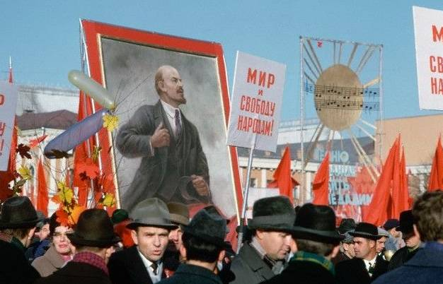
历史学家希尔斯指出，在宗教传统深厚的社会中，“传统对人的行为具有规范作用和强大感召力，是由于传统被赋予了神圣或超凡的特质。围绕某一圣物或仪式或神话，能够唤起或激发人们的敬畏之情。”苏联的政治传播就充分利用了这一点，通过象征性宣传，将传统合法性和克理斯玛合法性有机地结合起来。
从受众的角度来看，俄罗斯民众和精英一样，无一例外都具有弥赛亚情结，因此苏联对东正教“弥赛亚主义”的因袭和创造性转化，使其在民众中获得了较为广泛的认可和接受，这也是其宣传取得传播效果的重要保障。通过考察布尔什维克对群众的政治宣传，我们就会发现它确实采取了一个神学的框架，这种框架是从俄国社会的宗教传统中内生出来的。也正是由于采用了一种弥赛亚主义的传统方式，苏联的政治传播在相当程度上契合了民众的宗教心理和宗教情感，成效显著。
声 明
国政学人微信公众平台系非盈利学术平台。文章出自最新的南大CSSCI和北大中文核心来源期刊为。目的是方便广大学人进行学术研究，促进学术的传播和交流，不做任何商业用途。如有任何权利问题，请直接与我们联系。